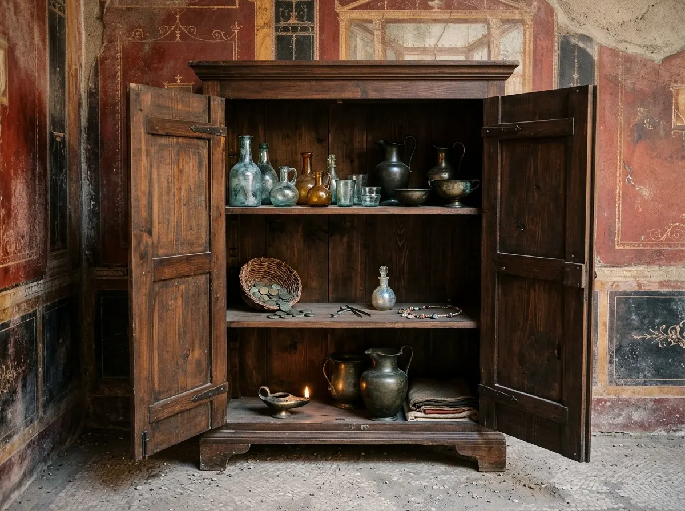
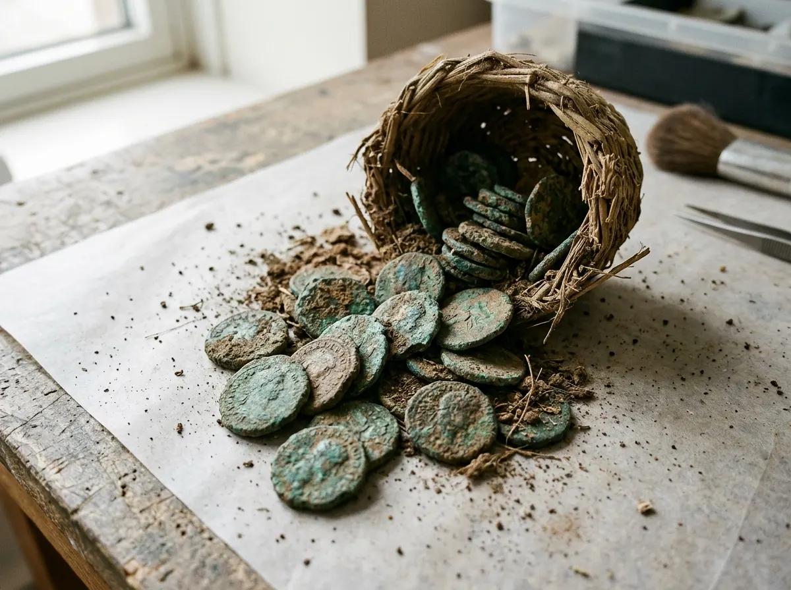
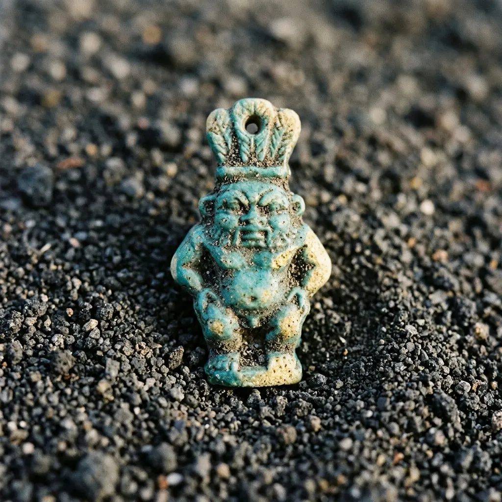
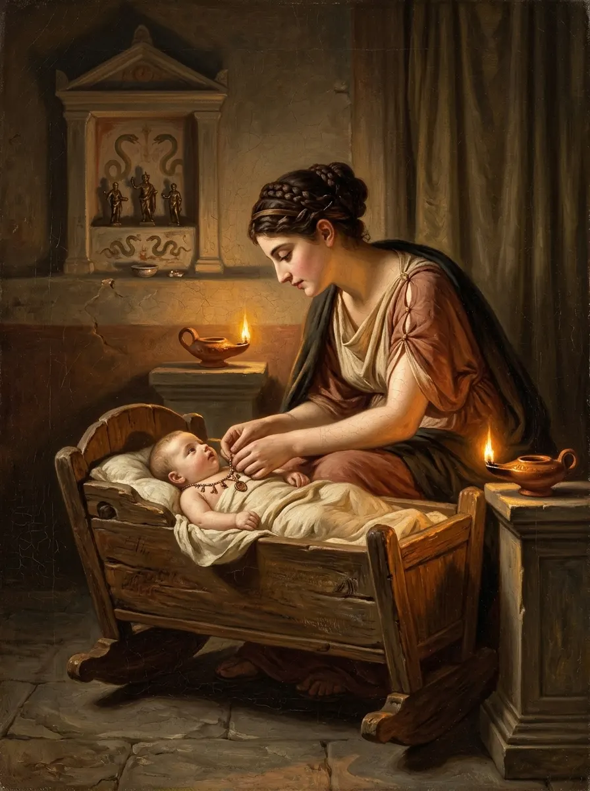
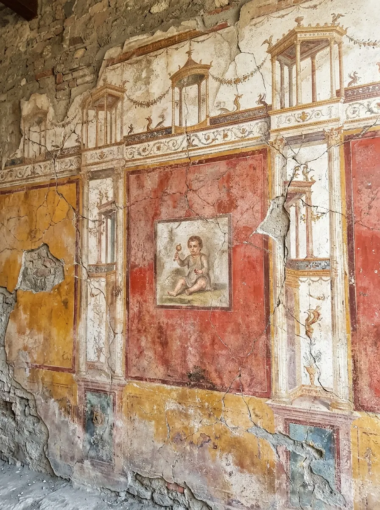

Pompeya era una ciudad próspera de Campania, en el sur de Italia, a los pies del Vesubio. Tenía foro, templos, termas, teatros y calles llenas de tiendas. Sus habitantes no sabían que la montaña verde que veían cada mañana era un volcán activo.
Hubo avisos. Entre los años 62 y 63 un fuerte terremoto dañó la ciudad, y en el año 79 muchas casas todavía se estaban reparando. Ese año el Vesubio entró en erupción: una columna de ceniza y piedra pómez cubrió Pompeya, Herculano y Estabia, y las nubes ardientes que bajaron después acabaron con quienes no habían huido.
ANIMACIÓN · ANTES Y DESPUÉS
De los calcos de las víctimas a la casa llena de vida, con la columna del Vesubio al fondo: así era Pompeya horas antes del final.
Reconstrucción visual animada · sin audio
La tragedia tuvo una consecuencia que hoy es un regalo para la historia: la ceniza selló la ciudad como una cápsula del tiempo. Muebles, comida, pinturas, monedas y objetos de uso diario quedaron donde estaban el día de la erupción.
62–63Un terremoto daña la ciudad.
79 d. C.El Vesubio sepulta Pompeya, Herculano y Estabia.
1748Empiezan las excavaciones borbónicas.
1863Giuseppe Fiorelli inventa los calcos de yeso de las víctimas.
1997Pompeya, Patrimonio de la Humanidad (UNESCO).
2026Se reconstruye el armario de la casa IX 11, 7.
MECANISMO · RENDER 3D
Cómo se hace un calco de Pompeya
El método que inventó Giuseppe Fiorelli en 1863, en cuatro pasos.
CLAVE PARA RECORDARPompeya no es una ruina normal: es una ciudad detenida en un instante. Por eso, casi 300 años después de empezar a excavarla, todavía aparecen habitaciones que nadie había estudiado.
¿Terminaste la lección?
LECCIÓN II · 3 MINUTOS
Un armario en la calle de la Abundancia
La Via dell'Abbondanza era la calle más viva de Pompeya. La cruzaba de oeste a este, del Foro a la puerta de Sarno, con tiendas, tabernas, talleres y casas de fachadas pintadas con anuncios electorales. Sus losas todavía conservan los surcos de las ruedas de los carros.
ANIMACIÓN · LA CALLE RENACE
Las ruinas de una calle de Pompeya recuperan sus fachadas, balcones y colores. Fíjate en las losas y en los pasos elevados para cruzar.
Reconstrucción visual animada · sin audio
En esa calle está la casa IX 11, 7. Su fachada se excavó en 1912, pero las habitaciones de detrás esperaron más de un siglo. En 2026, durante la restauración de la vecina Insula de los Castos Amantes, los arqueólogos por fin las estudiaron a fondo.
En una sala decorada con pinturas del Cuarto Estilo aparecieron los restos de un armario de madera. Con los datos de la excavación, el equipo del Parque Arqueológico reconstruyó su forma y su contenido.
24+piezas en un collar de amuletos
38monedas de bronce en un cestillo
1912año en que se excavó la fachada

El armario y su contenido. Reconstrucción visual.

Las 38 monedas en su cestillo de fibra vegetal. Reconstrucción visual.
El inventario dibuja una casa con vida propia:
ASEOPinzas, un frasco de perfume y un mezclador.
CULTO Y LUZUn quemador de incienso y una lámpara de aceite.
COMERCIOPesas de plomo en una cajita: quizá un pequeño negocio.
COCINAOllas y vasijas de bronce, vidrio y cerámica.
AHORRO38 monedas de bronce en un cesto.
INFANCIAUn collar de al menos 24 amuletos diminutos.
Un detalle inesperado: en un altillo, dentro de un ánfora, aparecieron los esqueletos de al menos dos ratones de campo, atrapados también por la erupción.
CLAVE PARA RECORDARUn armario es un retrato involuntario. Lo que una familia guarda junto (dinero, perfume, una lámpara, los amuletos de un niño) dice qué valoraba y cómo vivía.
¿Terminaste la lección?
LECCIÓN III · 3 MINUTOS
¿Qué eran los crepundia?
El collar del armario tiene al menos 24 piezas de fayenza, hueso, pasta vítrea y cristal de roca: el dios Bes, Mercurio, manos, pies, piñas y racimos de uva, cada una con su agujero para colgar. Los especialistas lo interpretan como crepundia.
La palabra viene del verbo crepare, «crujir». Los crepundia eran colecciones de pequeños objetos ensartados que sonaban al moverse. Se colgaban del cuello del bebé o junto a la cuna, y cumplían tres funciones a la vez:
PROTEGERAlejar el mal de ojo y la enfermedad.
SONARUn sonajero que entretenía al bebé.
IDENTIFICARUn conjunto único para reconocer al niño.

Amuleto de fayenza del dios Bes. Reconstrucción visual.

Una madre romana coloca los amuletos a su hijo. Recreación al estilo del siglo XIX.
Su poder era apotropaico: debían ahuyentar las fuerzas que, según la creencia popular, acechaban a los más débiles. Por eso abundan las manos, los pies, los frutos y los dioses protectores como Bes, un dios egipcio enano y de aspecto grotesco que custodiaba los partos y a los niños. Que un dios egipcio protegiera a un bebé de Pompeya muestra lo conectado que estaba el Mediterráneo romano.
Los crepundia también servían como prueba de identidad. En las comedias de Plauto, como Rudens, una joven perdida es reconocida años después gracias a los objetos de su infancia, guardados en una cajita.
CLAVE PARA RECORDARLos crepundia eran a la vez juguete, escudo mágico y documento de identidad. Guardarlos era guardar la historia de un niño.
¿Terminaste la lección?
LECCIÓN IV · 3 MINUTOS
Nacer en Roma
Sobrevivir a la infancia era la gran prueba de la vida romana. Las estimaciones demográficas sugieren que una parte enorme de los niños, quizá cerca de la mitad, no llegaba a la adolescencia. Fiebres, infecciones y complicaciones del parto eran las causas habituales.
Por eso el recién nacido no recibía su nombre de inmediato. Había que esperar al dies lustricus, el día de la purificación: el octavo tras el nacimiento para las niñas y el noveno para los niños. Ese día se le podían entregar sus primeros amuletos.

Pintura mural al estilo del Cuarto Estilo pompeyano. Recreación.
DIES LUSTRICUSDía 8 (niñas) o 9 (niños): purificación y nombre.
BULLACápsula con talismanes que llevaban los niños libres.
LUNULAColgante de media luna de las niñas, hasta la boda.
Los niños libres llevaban la bulla hasta que vestían la toga viril, hacia los quince o dieciséis años. Ese día la dejaban como ofrenda a los dioses del hogar: era el fin oficial de la infancia. Las niñas llevaban la lunula hasta casarse.
Con este contexto, el collar del armario cobra otro sentido. Puede que perteneciera a un niño que vivía en la casa, o que fuera un recuerdo familiar guardado durante años. En cualquier caso, guardar los amuletos de la infancia era guardar la prueba de haber sobrevivido.
CLAVE PARA RECORDAREn Roma la infancia se vivía bajo protección mágica constante. Los amuletos acompañaban al niño desde que recibía su nombre hasta que se convertía en adulto.
¿Terminaste la lección?
LECCIÓN V · 2 MINUTOS
Lo que sabemos y lo que no
Una buena lectura de la historia separa los hechos de las hipótesis. El hallazgo del armario es un ejemplo perfecto: hay datos firmes, preguntas abiertas y afirmaciones que circulan sin pruebas.
✓ CONFIRMADO
Un collar de al menos 24 elementos y 38 monedas en un armario de la casa IX 11, 7.
Pesas de plomo que apuntan a una actividad comercial.
? EN ESTUDIO
Si el collar era de un niño de la casa o un recuerdo familiar.
Quién vivía allí: «Cornelius Maximus» es solo una hipótesis.
✗ SIN PRUEBAS
Que los dueños murieran en la erupción: su destino es desconocido.
Cifras exactas de mortalidad infantil en Pompeya.
El propio director del Parque Arqueológico, Gabriel Zuchtriegel, lo resume con prudencia: no se puede reconstruir con certeza la identidad de quien vivía en la casa. La atribución a Cornelius Maximus se basa en inscripciones que hoy ya no son visibles.
ANIMACIÓN · LO QUE QUEDA
Una casa restaurada vuelve a su estado actual: muros desnudos, techos de protección y los calcos de quienes no escaparon. Lo que vemos hoy es solo una parte de la historia.
Reconstrucción visual animada · sin audio
CLAVE PARA RECORDARCuando leas una noticia de arqueología, pregúntate siempre: ¿esto está confirmado, se está estudiando o es una suposición? Es la diferencia entre conocer la historia y repetir titulares.
¿Terminaste la lección?
6 PREGUNTAS · 1 MINUTO
Quiz final
HISTORIKA
Certificado de lectura
Has completado el micro-curso
Pompeya en 15 minutos · La infancia bajo la ceniza
Fuentes
Reuters, «Pompeii cupboard opens window onto life before Vesuvius erupted», 29-10-2026.
Finestre sull'Arte, armario de la casa IX 11, 7 de Pompeya, 29-10-2026.
Plauto, Rudens. Las imágenes son reconstrucciones visuales.
¿Quieres ir más allá?
La revista HISTORIKA «Pompeya, los talismanes del último día» amplía este curso con 16 páginas, y en el grupo exclusivo tienes todas las revistas completas.